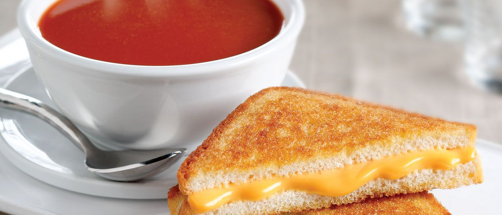
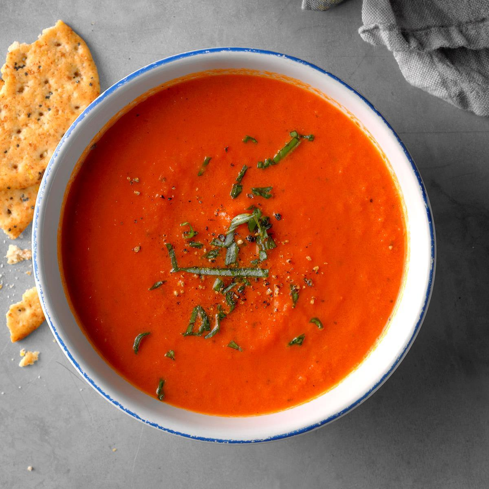
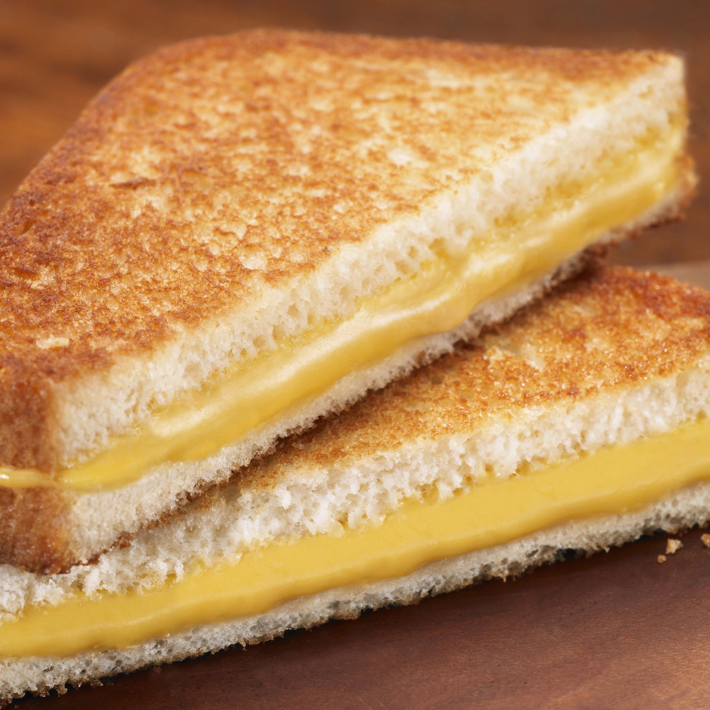
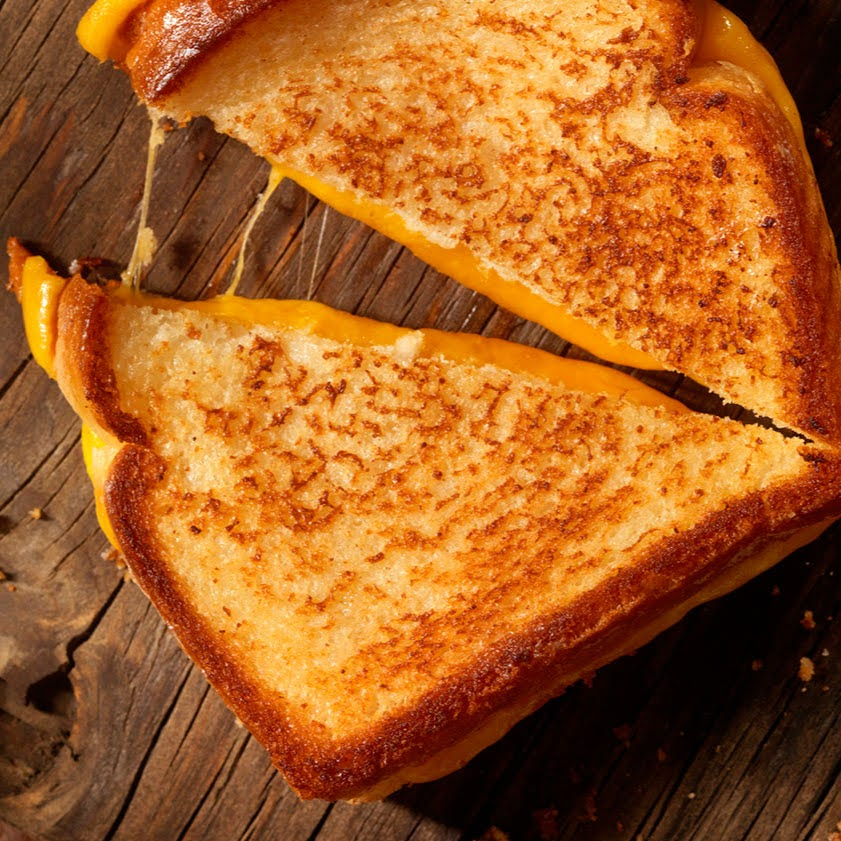

Grilled Cheese
Have you ever just craved an insane amount of carbs and dairy? We've all been there and this recipe will satisfy all your desires. Grilled cheese sandwiches are a college favorite that anyone can make. You can also enjoy it by dipping your sandwich into some creamy, tomato soup

Ingredients
- 2 slices of Bread
- 2 slices of sharp Cheddar
- butter
- 1 can of Tomato Soup

Directions
- Preheat skillet over medium heat
- Generously butter one side of a slice of bread
- Place bread butter-side-down onto skillet bottom and add the cheese slices
- Butter a second slice of bread on one side and place butter-side-up on top of sandwich
- Grill until lightly browned and flip over
- Continue grilling until cheese is melted

"This recipe is great! I also tried replacing the butter with mayonaise, and that works great too."
"Such a a good comfort food. Nothing better than a traditional grilled cheese."
"I'm a freshman in college, and this recipe saved my life! You don't need that many ingredients and it's so simple to make."